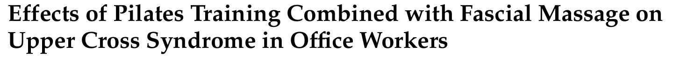
🔖原文标题（Healthcare 2025;13:410，开放获取）
📚 文献信息
▪ Jiang L, Thadanatthaphak Y, Tudpor K. Effects of Pilates Training Combined with Fascial Massage on Upper Cross Syndrome in Office Workers. Healthcare. 2025;13(4):410.
▪ 作者来自泰国玛哈沙拉坎大学，受试者在四川自贡招募
▪ 单盲随机对照试验；DOI：10.3390/healthcare13040410
上交叉综合征（UCS）说白了就是一种“前紧后弱”：上斜方肌、胸大肌紧张，下斜方肌、颈深屈肌无力，结果就是头往前探、肩往前扣、背往后弓。在办公室人群里，患病率能到 32% 左右。
普拉提和筋膜放松，单独拿出来都常被用来改善体态。这篇研究想看的是：普拉提之前先做 5 分钟筋膜放松，会不会比只练普拉提效果更好？
先说结论：两组都有改善，加了筋膜放松的那组在头前伸角、肩前伸角、颈椎后伸和旋转、疼痛和颈椎功能上更好。不过数据有几处明显对不上，后面细说。
• 对象：25～60 岁的上班族，有明显圆肩驼背，头前伸角 ≥46°、肩前伸角 ≥52°，并伴颈肩痛、僵硬、活动受限
• 排除：明显的颈椎间盘退变，颈肩外伤或手术史，严重心肝肾肺功能不全，孕妇，近 3 个月接受过其他治疗或运动
• 34 人随机分组：试验组先做筋膜放松再练普拉提；对照组只练普拉提。两组都是每周 3 次、每次 1 小时、共 12 周
• 每组各脱落 2 人，最后每组 15 人进入分析
• 评估：头前伸角和肩前伸角（体态）、颈椎 6 个方向的活动度、上斜方肌、下斜方肌和胸大肌的表面肌电（频率指标）、疼痛 VAS 和颈椎功能障碍指数 NDI
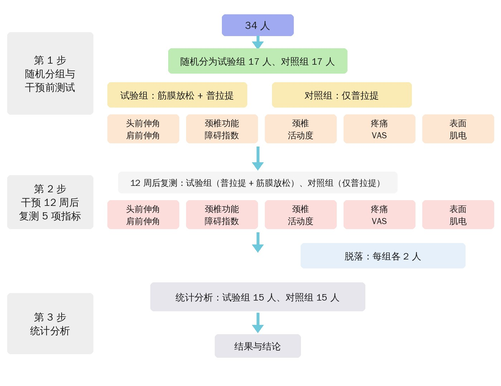
🔖原文图 1 研究流程（中文重绘）
表 2 两组基线情况
| 指标 | 试验组 | 对照组 | P 值 |
|---|---|---|---|
| 年龄（岁） | 35.87 ± 9.09 | 35.40 ± 8.24 | 0.884 |
| 身高（m） | 1.68 ± 0.07 | 1.67 ± 0.08 | 0.671 |
| 体重（kg） | 68.13 ± 7.89 | 65.81 ± 7.58 | 0.419 |
| BMI（kg/m²） | 20.24 ± 1.64 | 19.68 ± 1.46 | 0.332 |
| 男 / 女 | 6 / 9 | 8 / 7 | — |
🔖按原文身高和体重算，BMI 应在 24 左右，原文的 20 显然对不上，见文末证据评价
方案由 7 位康复和运动训练专家一起设计，每次 1 小时，分热身唤醒 → 肌肉训练 → 放松三段。试验组在这之前多做约 5 分钟的筋膜放松。
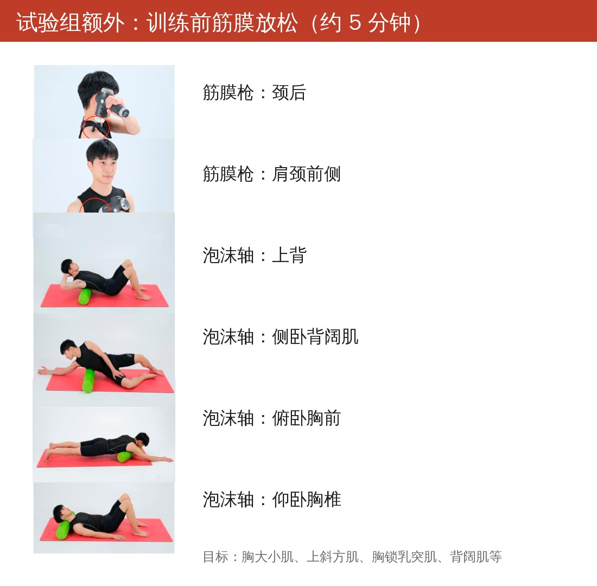
🔖原文表 1 试验组额外的筋膜放松（动作名为编者按照片标注）
筋膜放松用的是筋膜枪和泡沫轴，重点放松上交叉里“紧”的那一侧：胸大肌、胸小肌、上斜方肌、胸锁乳突肌和背阔肌等。
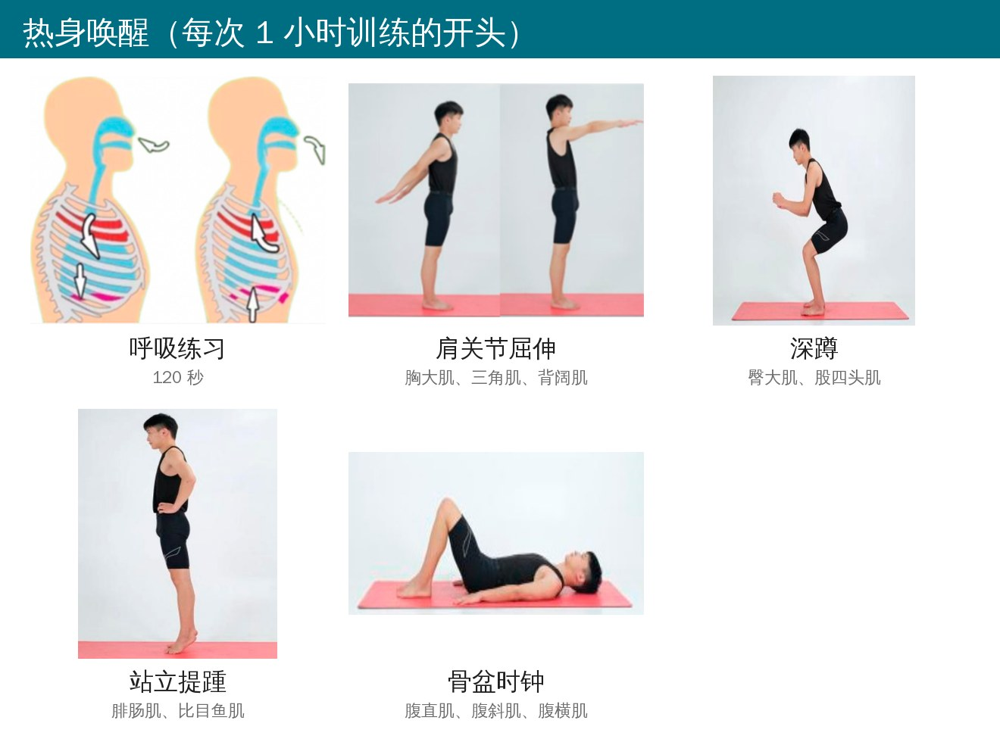
🔖原文表 1 热身唤醒
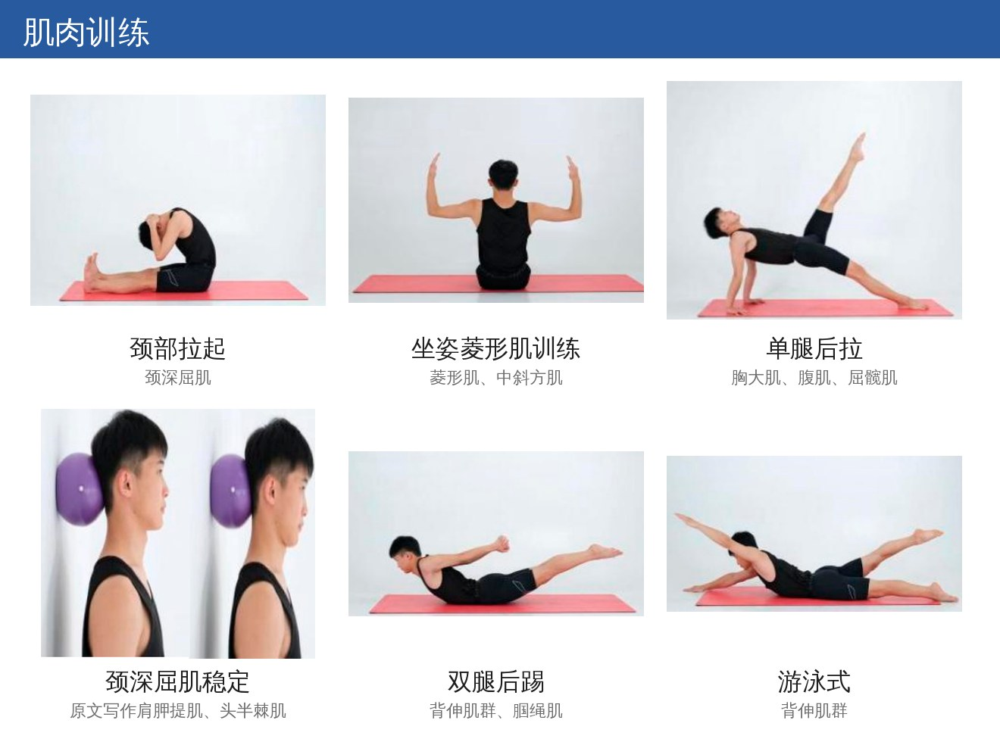
🔖原文表 1 肌肉训练
肌肉训练这部分是针对“弱”的那一侧：颈深屈肌稳定（头后夹一个小球靠墙）、颈部拉起、坐姿菱形肌训练，再加上单腿后拉、双腿后踢和游泳式这些练后链和背伸肌的动作。
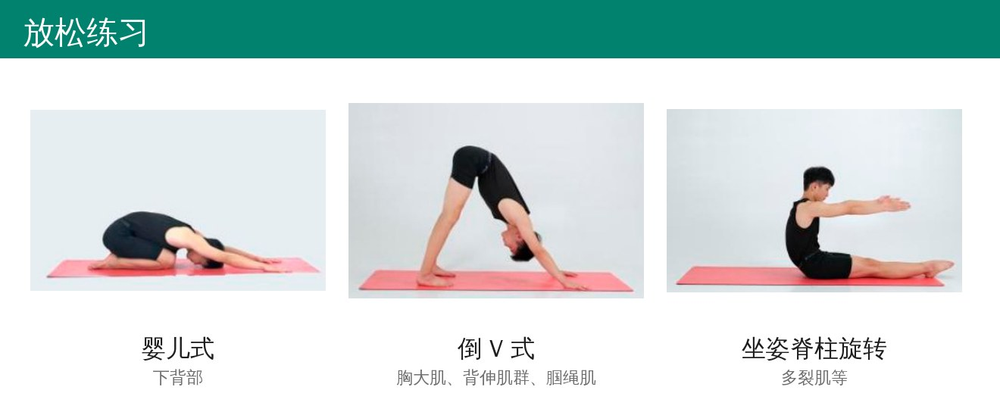
🔖原文表 1 放松练习
训练剂量（除呼吸练习外，所有动作相同）
| 阶段 | 每组次数 | 组数 | 动作间休息 | 组间休息 |
|---|---|---|---|---|
| 第 1～4 周 | 10 次 | 1 组 | 10 秒 | 20 秒 |
| 第 5～8 周 | 15 次 | 1 组 | 10 秒 | 15 秒 |
| 第 9～12 周 | 20 次 | 1 组 | 5 秒 | 10 秒 |
进阶思路很直接：每 4 周加 5 次、缩短休息。呼吸练习固定 120 秒，筋膜放松固定约 5 分钟。
原文结果全部以柱状图给出，没有具体数值表。下面的图按原图柱高读数后中文重绘，数字是近似值。
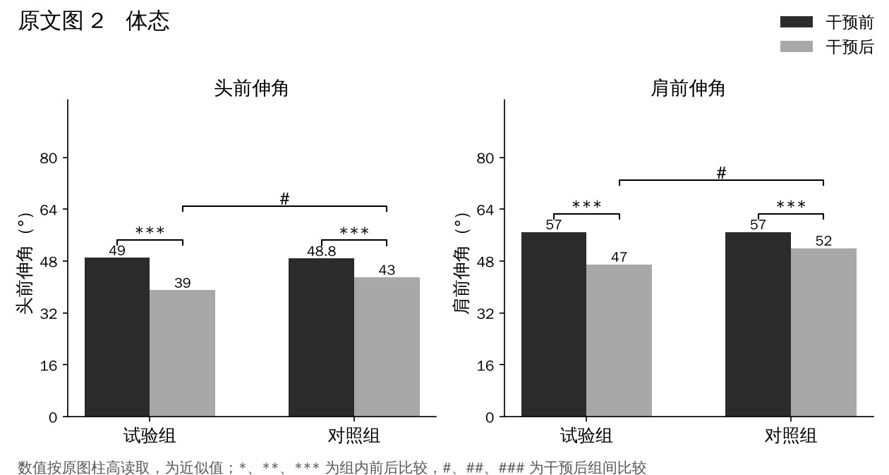
🔖原文图 2 头前伸角和肩前伸角（中文重绘）
体态改善最直观：试验组头前伸角大约从 49° 降到 39°，对照组降到 43°；肩前伸角试验组从 57° 降到 47°，对照组降到 52°。两项都是试验组明显更好。
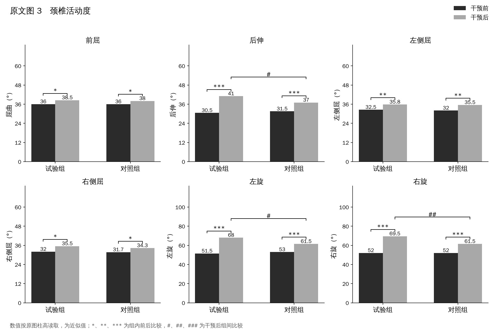
🔖原文图 3 颈椎活动度（中文重绘）
6 个方向两组都有增加，但组间差异只出现在后伸、左旋和右旋，前屈和左右侧屈两组差不多。
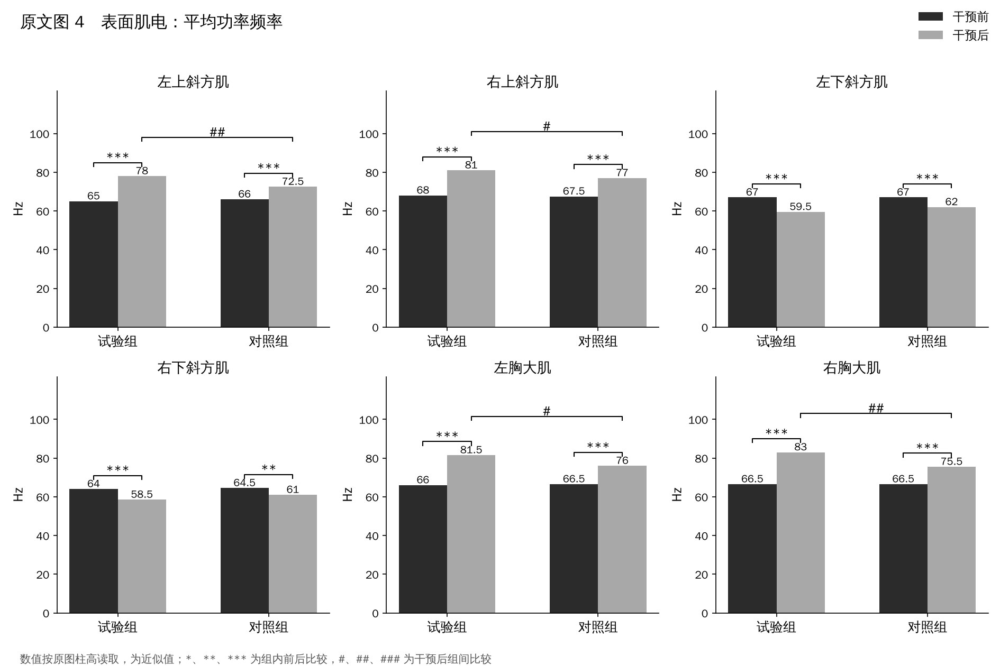
🔖原文图 4 表面肌电：平均功率频率（中文重绘）
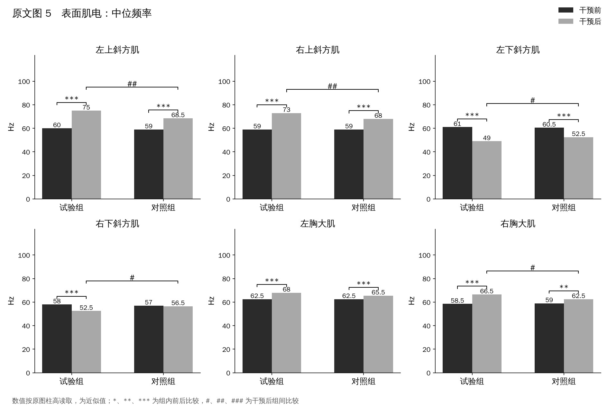
🔖原文图 5 表面肌电：中位频率（中文重绘）
肌电看的是频率指标，一般认为频率越高、肌肉越不容易疲劳。上斜方肌和胸大肌的频率两组都升高，试验组升得更多；但下斜方肌的频率两组都下降了，试验组的中位频率甚至比对照组更低。
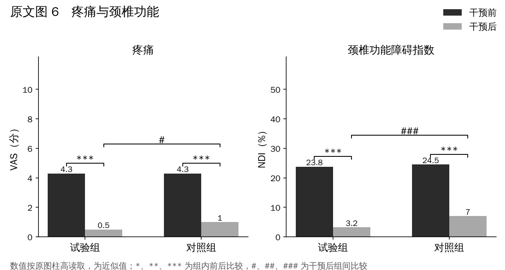
🔖原文图 6 疼痛和颈椎功能障碍指数（中文重绘）
疼痛 VAS 两组都从 4 分多降到 1 分以下；颈椎功能障碍指数试验组降到约 3%，对照组约 7%，组间差异显著。
这篇结论看着很漂亮，但有几处硬伤，用的时候要打折扣：
• BMI 算不通：试验组平均身高 1.68 m、体重 68.1 kg，算出来 BMI 约 24.1，原文却写 20.24；对照组同样算出约 23.6，原文写 19.68
• 下斜方肌的结果被说反了：讨论里说两种干预都“激活了薄弱的下斜方肌”，但实际数据是下斜方肌的频率下降，按作者自己的逻辑这意味着更容易疲劳，而不是被激活
• 对照组少了 5 分钟的“额外关注”：试验组多出来的不只是筋膜放松，还有额外的接触和时间，没有设置对照组的等时安慰处理
• “单盲”盲的是受试者：受试者不知道自己在哪组，但评估者是否设盲没有交代；而且做没做筋膜放松，受试者自己其实是知道的
• 每组只有 15 人，没有样本量计算，没有长期随访；动作每个只做 1 组，却同时规定了“组间休息”
• 筋膜放松只写了“约 5 分钟”，没有说每个部位多久、力度多大
• 原文结果只有柱状图、没有具体均值和标准差，也没有报告效应量，读者无法核对
• 小错误：肩前伸角的测量方法里写成了“头前伸角”；颈深屈肌稳定的目标肌写的是肩胛提肌和头半棘肌；正文说对照组疼痛 P＜0.05，图里却标的是 P＜0.001
这篇最实用的是那套“先松紧的、再练弱的”的结构：训练前用筋膜枪或泡沫轴放松胸大小肌、上斜方肌，然后用颈深屈肌、菱形肌、背伸肌的普拉提动作去练弱的一侧，每周 3 次、每 4 周加量。
至于筋膜放松到底额外贡献了多少，这篇研究还不足以下结论。临床上训练前花几分钟放松一下没什么坏处，但真正让体态和疼痛改善的，很可能还是那 12 周规律的训练本身。
欢迎关注悦美力公众号，获取更多物理治疗的专业知识！
📄参考文献：
Jiang L, Thadanatthaphak Y, Tudpor K. Effects of Pilates Training Combined with Fascial Massage on Upper Cross Syndrome in Office Workers. Healthcare. 2025;13(4):410. doi:10.3390/healthcare13040410
原文以 CC BY 4.0 协议开放获取。动作照片来自原文表 1，流程图和结果图为编者按原文中文重绘（结果数值按原图读取，为近似值），仅用于学术交流。